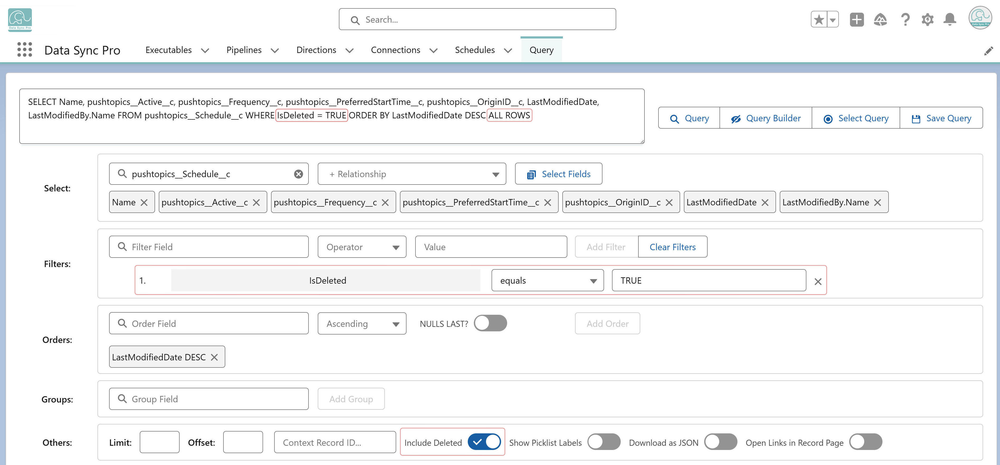

Yes. To query soft-deleted records (those in the Recycle Bin), use the ALL ROWS keyword in SOQL. In Query Builder, simply check Include Deleted—this appends ALL ROWS automatically and returns recoverable deleted records.
